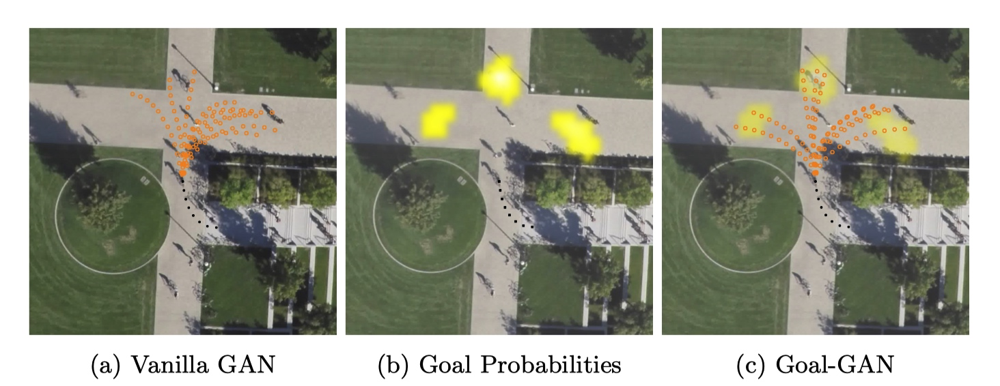
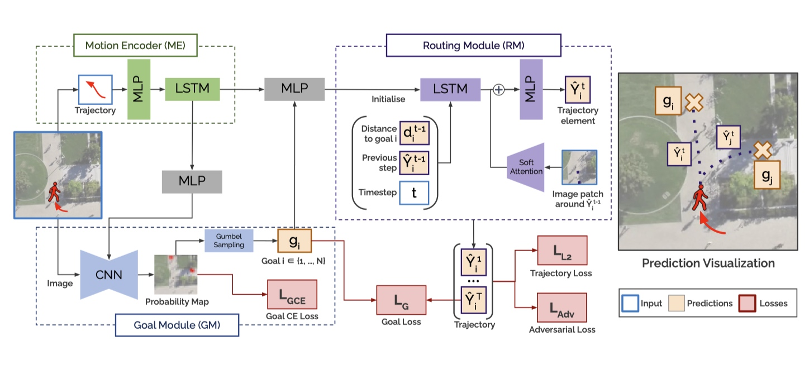
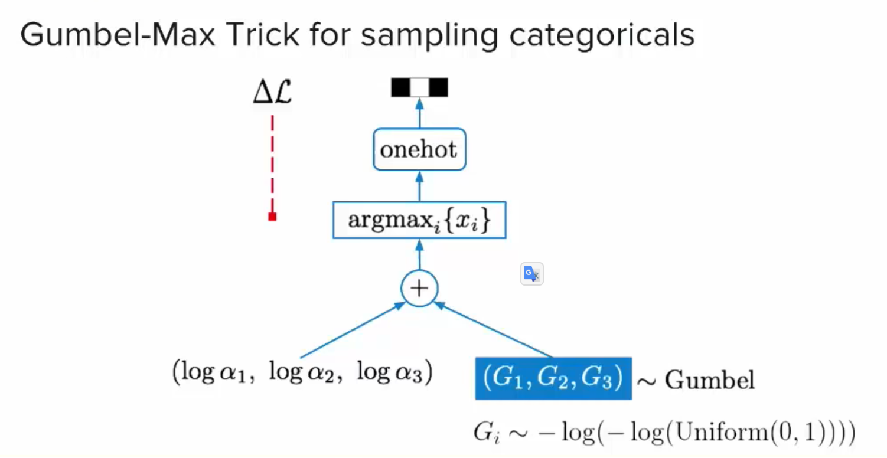
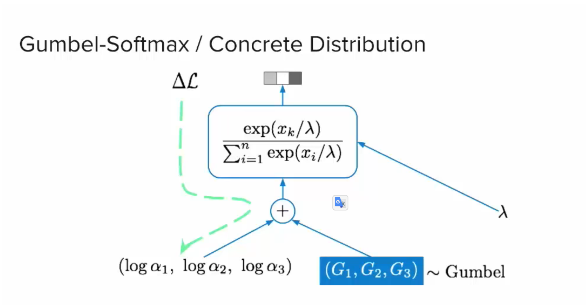
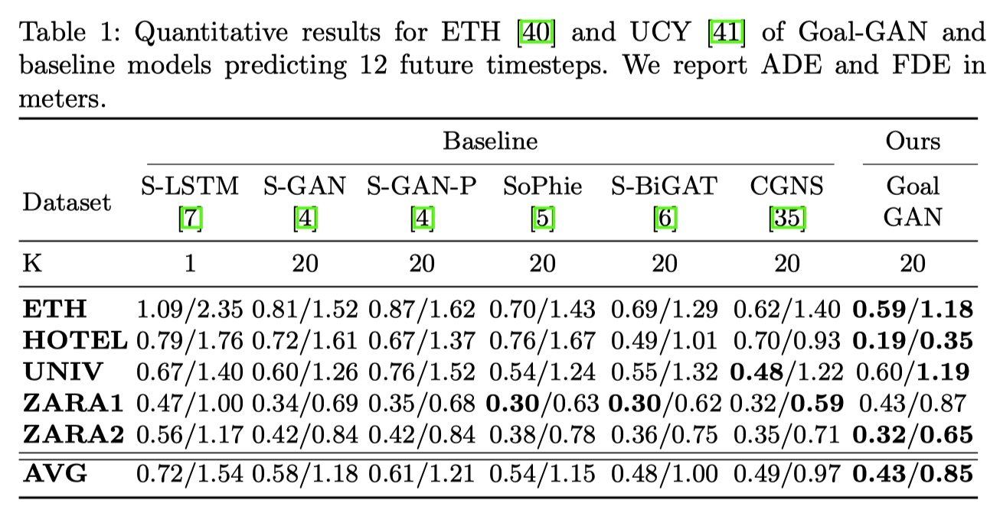
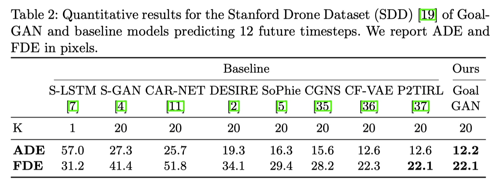
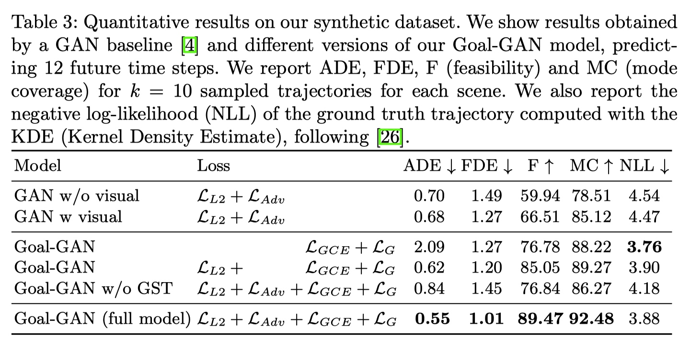

Problem address
This paper addresses the problem that vanilla GAN models generate highly diverse trajectories but tend to neglect the physical structure of the environment. The resulting trajectories are not necessarily feasible, and often do not fully cover multiple possible directions that a pedestrian can take.

Highlight of model structure

- Motion Encoder extracts the pedestrians’ dynamic features recursively with a long short-term memory (LSTM) unit capturing the speed and direction of motion of the past trajectory.
- Goal Module combines visual scene information and dynamic pedestrian features to predict the goal position for a given pedestrian. This module estimates the probability distribution over possible goal (target) positions, which is in turn used to sample goal positions.
- Routing Module generates the trajectory to the goal position sampled from the GM. While the goal position of the prediction is determined by the
Motion Encoder
- Vanilla LSTM-based encoder same as in Social GAN
Goal Module
How to fuse motion features with scene context?
-
The scene image is passed through an encoder-decoder CNN network with skip connections.
-
The scene image features in the bottleneck layer are concatenated with the motion features h ME from the Motion Encoder
Bottleneck dimension calculation example
grid_size_in: input grid size = 32
grid_size_out: output grid size =32
num_layers: numbers of layers of encoder = 3
bottleneck dim = (grid_size_in / (2^2))^2 = 64
Social feature to CNN structure:
f: linear layers with activations and output dim = bottleneck dim
h: social features (hidden) from motion encoder
I: scene image
cnn_enc: Encoder blocks with output dim = bottleneck dim
cnn_dec: Decoder part of the CNN with input dim = bottleneck dim
traj_enc = f(h)
scene_features = cnn_enc(I)
decoder_input = concatenate([traj_enc, scene_features)
Send to decoder:
output = cnn_dec(decoder_input)
return outpu
What is Gumbel Softmax trick?
Law of the unconscious statstician(LOTUS)
A theorem used to calculate the expected value of a function $g(X)$ of a random variable $X$ when one knows the probability distribution of X but one does not know the distribution of $g(X)$. The form of the law can depend on the form in which one states the probability distribution of the random variable $X$.
Assume that $z = g(\varepsilon, \phi)$ where $z$ has a distribution depending on parameter $\phi$, get that for any measurable function $f$:
Find the gradient function via Monte Carlo:
Problem: For the function relation $z = g(\phi, \varepsilon)$, it is not differentiable in discrete case.
Gumbel Distribution
Definition: a continuous distribution over the simplex that can approximate samples from a categorical distribution
- CDF:
- standard form:
- its probability density function
Gumbel-max Trick
Firstly, from inverse transform sampling, we get: . where $U$ is sampled from a uniform distribution. Then we can sample from a categorial distribution:
- $G_k$ is a sequence of standard Gumbel random variables.
- $\alpha_k$ is any random constant sampled from uniform distribution $\alpha \sim [0,1]$

Gumbel-softmax Trick
Any discrete random variable can always be expressed as a one-hot vector by mapping the realisation of the variable to the index of the non-zero entry of the vector;

Goal Sampling vs. Soft Attention
Least Square Loss
The original formulation using a classifier with sigmoid cross entropy function potentially leads to the vanishing gradient problem.
Quantitative Result
Benchmark results


Negative Log-likelihood
Compares the probability density function between the ground truth and predicted positions using Kernel Density Estimation(KDE), proposed in Trajectron.
total_score = 0
For each future time step:
kde = scipy.states.gaussian_kde(positions)
log_pdf = kde.logpdf(ground truth)
total_score += log_pdf / num_time_steps
Mode Converge
Assesses if at least one of the k generated trajectories $\hat{y}$ reaches the final position of the ground truth final up to a distance of $2m$:
Feasibility
The ratio of trajectories lying inside the feasible area:
Synthetic Dataset
